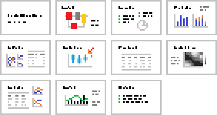
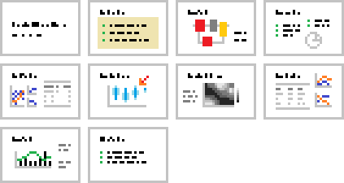
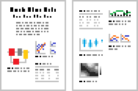
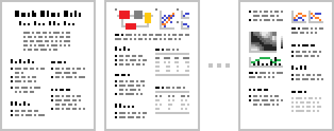
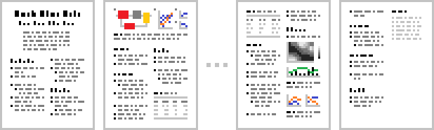
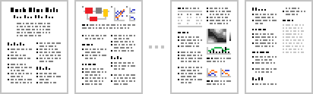
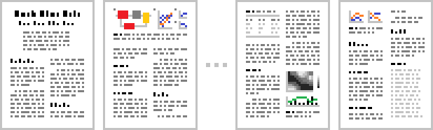
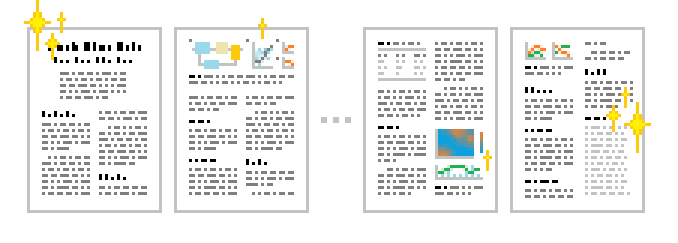

A recipe for pain-free(?) academic writing
Judging by most reports on the subject, for most people most of the time, writing is a painful experience. However, if what you are writing is something like a paper or a thesis, you are in luck: I think academic writing can be an exception to the universal rule of more writing = more pain, and here I will outline a recipe for how most of the pain can be taken out of it, by iterative top-down writing. Feel free to skip past my introductory musings below, directly to the 8-step recipe.
Introductory musings
I think there are three main reasons for why writing is so often so painful:
First, it is very painful to produce text and find that it sucks. We are all worse than average writers, in the sense that any text we write is almost always worse than the average text we read, simply because the average text we read has not only been written, it has also be rewritten, and rewritten, and then rewritten some more, until it has reached average quality (or a little better or a little worse). Almost every single guide to writing stresses this point: Don’t worry if your first drafts suck. I agree with this recommendation, but telling people not to worry about things is rarely effective, and therefore I prefer this recommendation instead: Write your first drafts in such a way that it is impossible to tell if they suck or not.
A second main reason why writing is painful is that it is, by design, incompatible with our puny brains. More specifically, it is incompatible with our limited short-term memory, and trying to keep too much stuff in short-term memory is painful. Think of it this way: If the message you want to get across is simple and small enough that you can easily keep it in mind all at once, then why even write it down? Logically then, as soon as we start writing text, we do so precisely because we are trying to convey a story that is too complex to fit in short-term memory. At this point, you can choose the path of pain: Stare at your blinking cursor while trying to keep your entire complex story in mind (if you even know what it is), and guess what the next sentence should be like such that it can lead on to a good next sentence, and so on and so forth, in such a way that the end result will beatifully get your entire message across. Or choose differently: Write in such a way that you don’t really need to remember what your message is anyway.
The third main reason is a knock-on from to the first two reasons: Because of our puny brains we never get it right on our first attempt. We sweat over individual sentences until they hopefully don’t suck, while trying to keep in mind all that will follow, and when we have have been in that purgatory for a few days or weeks, we realise, or even more annoyingly one of our supervisors or co-authors informs us, that actually there were these other big important points we hadn’t thought about, which means that now we need to restructure much of what we have written, and many of the sentences we had finally convinced ourselves didn’t suck will now need to be modified or even entirely rewritten. The alternative path here is: Refuse to write any text until you are already past this minefield.
All three of the pain points I have mentioned above applies to all writing, but for academic writing in particular there is a cheat: Since academic writing follows some pretty well established conventions for structure and style, it lends itself particularly well to iterative, top-down writing. This type of writing addresses the three pain points in the ways I hinted at above, by starting from what needs to be written rather than actual writing (paint point 3), by splitting up the writing into chunks which are brain-manageable in size (pain point 2), and by making sure that these chunks aren’t really finished text, such that their (likely) suckiness can’t be assessed (pain point 1).
Of course, I didn’t invent the idea of iterative, top-down writing for academic text. What follows below is just my own take on it. The main impetus for writing it down is that over the last few years I have found myself walking a fair few first-time academic writers through it verbally. In the future I hope to save everyone time and confusion by instead sharing this text and saying things like: “OK so until next time you’ll work on step 3 then?”
The recipe
Below follows an 8-step guide for how to write a journal or conference paper, from blank screen to submission. If it’s a paper you’re writing, you can dive right in, and you don’t even necessarily need to read through the entire recipe before you begin. You can just read step 1, work on what is prescribed there, then read step 2, and so on.
If you’re not writing a paper, but rather a thesis, dissertation, technical report, grant proposal, or some other type of academic document, then in my experience the same basic approach to writing is still a good idea, but you may want to tweak the details of the recipe to your specific type of document. In this case, maybe give the whole recipe a read first.
If you’re working with a supervisor or other co-authors (from now on I will mostly refer to all of these simply as “co-authors”), consider asking for their feedback after each step below. Regardless, with or without feedback from others, it can be a good idea to give yourself a little pause between steps, to come back to the work with fresh eyes.
Quick links to the different steps:
- Doing (and documenting) the research
- Gathering your results - and methods!
- Deciding on your (draft) message
- Title-abstract-figures-tables
- Heading-level outlining
- Paragraph-level outlining
- Sentence-level outlining
- Turning the outline into text
- Polishing
Since this is your project, regardless of the type of document you’re writing, you should feel free to change up the recipe however you want. For example, you can do multiple steps in one go before taking a pause to review and/or ask for feedback. I would caution, however, against the temptation of skipping straight from Step 4 to Step 7. In my experience, it really pays off to put dedicated work into especially Step 5, but also Step 6.
An important overall rule of thumb, that has helped me many times: At any step along the way, if you’re finding the work substantially painful, there is a good chance that you might have skipped ahead too far too soon; you might be writing at a level of detail that you’re not yet ready for, and that’s what making it so difficult. Therefore, if you realise that you’re spending ages staring at the cursor, or endlessly rewriting what you just wrote, or lying in bed screaming into the pillow, take a step back from your writing and try to see the bigger picture. In practice, this means: Try to back up a step or two in the recipe, and do some more of what is prescribed there before you continue - hopefully the pain will subside.
Step 0 - Doing (and documenting) the research
This recipe does not cover the research that comes before the writing. The only thing I will say about the research itself here is that in relation to the writeup, it is important that whatever approaches and methods you use, you make sure to document your work along the way. Exactly what did you do, and why did you do it?
Step 1 - Gathering your results - and methods!
Target output: What you are aiming for in this first step of the recipe is a document, or a set of documents, presenting your methods and results, and possibly your early interpretations of them, in such a way that you and any coauthors can get an overview of the “raw materials” for what you’re planning to write.
What you produce in this step might for example look something like this set of slides (but less pixellated):

Control questions before proceeding: The point of step 1 is to be able to answer the following questions:
- Are there “enough results” here?
- Do we understand roughly what the main takeaway message or messages are from these results?
- Do we feel sufficiently convinced about the methods behind the results, such that we won’t need to redo research or analysis work later on?
Once your answer is yes to all of the questions above, you’re ready to continue on to step 2. (Each step in the recipe below will follow this same structure: A description of the target output you’re working toward, and some control questions to help you determine when you’re done.)
If you are working entirely on your own, the document(s) you prepare in this step might be pretty disorganised, a bunch of notes and figures and files across your hard drives and coat pockets. However, if you are working with coauthors, you’ll probably want to organise your material into something like a PowerPoint presentation, or possibly an early Word or LaTeX document. Regardless of software, be concise and stick to just bullet points and figures and tables. This will allow you to verbally present your stuff to your coauthors, for them to ask questions, and so on.
In this step, don’t spend time on making your material beautiful - the only goal is to help yourself and coauthors understand what it is you actually have. To support this goal, figures and tables need to be readable and understandable, so you want the basics to be in place, like units, legends, consistent axis scaling across panels, and so on. But none of it needs to be pretty.
The amount of material you prepare for this step can be more than will fit in the final document you are working toward. This type of “results surplus” will typically not affect your ability to answer the three control questions I listed above, and might even be helpful for what comes net.
It is also quite possible that the outcome of trying to answer the three control questions is that you find that something is missing or ought to be done differently. If so, it’s back to the research again, and return to this step later.
Step 2 - Deciding on your (draft) message
Target output: A new version of the document(s) from step 1, now also including a bulleted list of briefly formulated main takeaways, of which one is ideally your main message to be conveyed by the entire text.
Here’s the same example pixellated slide deck again, but now with a “key takeaways” slide added at the start:

Control questions before proceeding:
- Do we have a main message or set of messages that is substantial enough for the paper we’re planning to write, and for the target publication outlet we want to send it to?
- Are we convinced that our results support these message(s)?
In other words, it is now time to decide on what the main conclusions from your paper will be - the main message(s) you want your readers to take away. In practice, the bulleted list you produce in this step can be similar to the “highlights” that some journals require for each paper.
In other words, the main output from this step is quite small, text-wise, but producing it might still take a bit of work: As you know from reading other scientific papers, in some cases the main conclusions are quite obvious from the results, but in other cases there can be non-trivial arguments between results and conclusions, and if the latter is the case for you, you need to figure out what those arguments are. Therefore, this step can sometimes require quite a bit of thinking and discussing with your co-authors.
If your arguments are particularly non-trivial, you might also want to try out some of your thinking in text form, by writing snippets of rough text or bulleted lists that help you outline the reasoning more clearly. I am not advocating writing an actual Discussion section at this stage, but I am suggesting that you should make sure that you know that you will, later on, be able to write a Discussion section that gets you from your results to your conclusions.
As indicated in the control questions above, this is a good time to start thinking seriously about (and discussing with your coauthors) where to send your paper, if you haven’t already decided that, since what takeaway message or messages to focus on might differ between different outlets.
A typical recommendation is that a scientific paper should only really have one main takeaway message. In practice there is generally more than one message, at least in the form of some smaller messages relating to the main message, or supporting it, or introducing some caveats moderating it or similar. However, the overall recommendation of not overcomplicating things is a sound one. Therefore, at this stage you might want to cut out some of the results/figures/tables that you compiled in step 1. If you’re happy with your main takeaway messages, and if there are some results which are definitely not needed to convey those messages, you can remove those results from your working document.
Step 3 - Title-abstract-figures-tables
Target output: A draft document, with at least a title suggestion, a full draft abstract, and first complete versions of the figures and tables that you think should be in the final paper.
Here’s what the pixellated slide deck might look like, after being turned into a title-abstract-figures-tables paper draft:

Control questions before proceeding:
- Do the title and abstract reflect a message and narrative that all coauthors agree on?
- Do we have the right figure and table material in the main text (and in supplementary material/appendix, if applicable)?
If you don’t have a draft version of your actual paper already, in Word, LaTeX or whatever software you intend on using, now is the time to create that document. If you have decided where to send it (as mentioned above, I definitly think it is a good idea to have made that decision at this stage), now is a good time to move into the correct document template for that journal or conference.
The purpose of this step is to become even more specific about your message, and about the overall narrative that you will present to get that message across. Fully writing out a title and abstract will help you do that, and doing it will hopefully be relatively pain-free since you have your output from Step 2 to base it on.
First though, let’s think about the figures and tables. It’s time to start getting these a little closer to what they will look like in the final document, in terms of how many figures and tables go in the main text, whether some of them belong in appendix / supplementary material, and roughly what each figure and table will look like in terms of figure panels and table rows and columns, as well as their actual contents. (Again, knowing what publication outlet you are targeting helps, since you can bear things such as single-column figure format and so on in mind.) You are not optimising for figures etc for beauty yet, so avoid fretting over line styles and colours and font sizes at this stage.
Put your draft figures and tables into your main document, in roughly the order you think they should be in. If you think some of the figures or tables belong in appendix / supplementary material, also indicate that cutoff in the document.
Then, have a go at writing a title for your paper. You want to (a) keep it as short, understandable, and attention-grabbing as possible, while at the same time (b) getting across as much as possible of the main message you decided on in Step 2. This is not always an easy trade-off, and another reason why it’s a good idea to have a single main message than a complicated set of different messages to convey. To help you craft a good title, consider studying the titles of other papers that you like, and imitate the good ones. If it’s hard to decide on a single title, feel free to create a list of multiple alternative one and keep them all for now, so you can get feedback from your coauthors later.
Then, once you have one or a few different candidate titles, it’s time write an abstract. If you want to, you can dive in at the deep end, and try writing the abstract as running text straight away. That does, however, risk bringing back some of those writing pain points I discussed in the intro. Therefore, I recommend that you have a go at writing the abstract iteratively, just like you will for the rest of the paper later on, as follows:
- Start with a copy of the short bulleted list of main messages you produced in Step 2, since almost certainly you will want all of that information to be present in the abstract.
- Expand this bulleted list into a somewhat longer bulleted list, covering all the main bits of information you think belongs in the abstract. This depends on your specific targeted outlet, and also taste, but typically a paper abstract will including the following bits of information, roughly in this order: (a) the overall context of your research, (b) the specific research gap you’re addressing (c) a summary of your methods, (d) your main findings, (e) broader implications. (See also the resources I am linking further below.)
- Play around with these bullets, reorder, split, merge, or whatever, until the overall flow of the content makes sense to you. Aim for about one bullet point for every 1-2 sentences you envision will be needed in the final abstract.
- When you are at the point that you can read through your bulleted list and envision relatively clearly how these points could be made in that order as a smoothly and logically flowing text, it is time for your actual first writing: Go through your bulleted list one bullet at a time, and rewrite each bullet into those 1-2 sentences you envisioned. In some cases, depending on how you wrote your bullets, this might be a matter of just simply removing the bullet symbol at the start of the line, and if so that is completely fine.
Even though the steps mentioned above may seem more cumbersome than “just writing”, in my experience they tend to get you to a better end result in less total time. If this iterative business feels awkward at first, don’t worry. You’ll get plenty of more practice in steps 5-7 below. They essentially do the same thing as above, but for the rest of the paper.
Also, please do your best to resist perfectionism. It is completely ok if this first draft abstract doesn’t turn out quite as nice as you would want it to. It is just a first draft, and it is pretty likely that you will end up rewriting it partially or entirely later on anyway.
For further guidance on what should go in both the title and the abstract, this paper by Mensh and Kording (2017) provides some really useful advice. Another good reference regarding abstract content and structure is “How to write a Nature summary paragraph”.
Step 4 - Heading-level outlining
Target output: An expansion of your title-abstracts-figures-tables document, into a full “skeleton draft” of your paper, with all section headings in place, and rough bulleted lists under each heading, outlining the topics that will be covered in each section.
Here’s the pixellated example illustration - omitting one or two pages in the middle of the document:

Control questions before proceeding:
- Does the heading structure make sense for conveying the intended narrative and message?
- Are all of the most important topics that need to be covered mentioned in the bulleted lists, and are these topics placed at least roughly in the right sections?
This is when you start thinking about the structure of your paper, and a good way to do that is to create the heading structure. I would suggest that you try to define your full hierarchy of section headings, including any subsections, subsubsections and so on, including also your discussion and conclusion sections.
For guidance on creating the overall structure of acadmemic papers, including what goes in each section, again the paper by Mensh and Kording that I linked in the previous step is a useful reference. However, as you’re probably aware, the structure of papers varies between disciplines and publication outlets. For example, Mensh and Kording advocate for a very short introduction before going straight into Methods (or straight into Results, if the journals is methods-last); this type of structure is common in life science journals. In many other fields and journals (and definitely in theses), it is more common to have an Introduction section that either includes or is followed by a dedicated Background or Literature review section. In this case, the first introductory section just serves to briefly outline the overall field and rationale for the paper, to get the reader motivated enough to soldier through the lit review that will follow.
If you’re unsure about what structure is appropriate for you, seek guidance from your supervisors or coauthors. It’s also a good idea to look at papers of a similar nature to what you want to write, for example from the same journal/conference, and analyse their structure for inspiration. Some journals/conferences also prescribe a specific structure as part of their guide for authors.
In addition to the headings, it’s time to start adding in some notes about your envisioned contents, in the form of bullets listing the topics you plan on covering in each section. You can do this on a relatively high level, but it’s still worth spending a little bit of time on trying to be relatively complete. Also, if you already know some of the key references you will need to support your gap statement, methods, discussions etc, you can add in citations to these already now. (A side note: If you’re planning on writing your reference list manually, I would suggest you reconsider now, and start using a reference manager. I am team Zotero, both for Word and LaTeX projects, but any software will be better than manual reference handling.)
Having said the above, at this stage you’re still in mind dump mode, not in making-things-pretty mode, so just let it flow, and don’t worry about language, and don’t worry about the internal order of bullets within sections. You don’t even need to worry too much about in which section a bullet goes, as long as you just have it somewhere for now. For example, you will probably want bullets for introducing all the different concepts that you make use of in your Methods/Discussion/Results, and most of these concept introductions probably belong in the Introduction section (or Background/Literature review). However, it can sometimes make more sense to introduce some concepts when they are first actually used, later on in the paper, and it might not be clear to you yet exactly what will work best, and that’s fine. The beauty of bulleted lists is that if you have a bullet that says “* Introduce concept X” in one section, it is very easy to just transplant that bullet to another section, later on, for example in step 5 below.
A note on LaTeX: When I do this type of bullet-based drafting in LaTeX, I don’t make lists that actually compile as lists (with \begin{itemize}, \item, and so on); I don’t think that’s worth the effort. Instead I just write the lists as I would in markdown, e.g., with an asterisk (*) at the start of each line, which means that the bullets will compile as sentences with asterisks in between. This approach is much faster, and works fine in my experience.
Somewhere around here, or in the steps below, you might realise that you need to add or reformat some table or figure material somewhere to better support your argument, or that some of the existing material can actually be removed. That’s entirely fine of course.
Step 5 - Paragraph-level outlining
Output: An expansion of your heading-level draft into a draft where the bulleted list under each heading reflects the intended order of paragraphs, and more completely lists the material to be covered inside each paragraph.

Questions:
- Does the order of paragraphs within each section make sense for covering the various topics and points in that section?
- Are all of the important topics to cover and points to be made in each section present in the bulleted lists?
This step is typically about taking the bulleted lists from Step 4, reordering them to reflect your intended order of paragraphs and their contents, and then expanding with additional bullets giving slightly more detail. As mentioned, the aim of this expansion is to flesh out a bit more clearly what each paragraph in your document will be saying, maybe about 2-5 bullets per paragraph. Working on this expansion might make you realise that you need to move small or large parts of your draft around to a different order than you had in Step 4, maybe also moving around entire sections, or adding or removing sections. That’s all fine - we’re still just working with bullets, so reorganisation is easy.
When you’re deciding what goes in each paragraph, a good piece of advice is to make sure that each paragraph covers one single “topic”, neither more nor less, to help make the logical structure of your overall text easier to follow. Exactly what constitutes a “topic” in this sense isn’t crystal clear, it could be a few points that are internally related to each other in some way (e.g., summarising and exemplifying a particular subset of the existing literature that you are covering in the Introduction), or one slightly more complex point that requires a bit more space to explain (e.g., a non-trivial conclusion that you draw from your results in the Discussion). For more on this matter, and lots of other useful advice, see this paper by Matteo Carandini.
Practically speaking, to signal in your draft document where one paragraph ends and the next one begins, I would suggest just putting an empty line between bullets that belong to different paragraphs. This works in LaTeX too, since an empty line compiles as a new paragraph. However, if you are using software where it is easy to create and edit multi-level bulleted lists (e.g., Word), feel free to use that functionality, with sub-bullets, sub-sub-bullets and so on, if that makes sense for you.
(A note: At the start of this recipe, I advised against skipping especially this step. One reason is that writing running text straight from a heading-level outline doesn’t get you around the pain points of self-criticism and short-term memory mentioned in my intro musings above. Another reason is that the result of heading-level outlining (Step 4) can sort of be mistaken for a paragraph-level outline (Step 5) if you read it quickly. When we read bulleted lists, it is easy to just let our eyes fly over the bullets and take in roughly what they are saying, and conclude that yeah that looks good. If you and your coauthors do that kind of quick review of the heading-level outline, without a solid attempt at trying to answer the two control questions I suggested above, and then go straight to the writing (Step 7), my prediction is that you will experience pain later on, as in finding it difficult to write the running text, and later on retracing your own steps to restructure and rewrite paragpraphs and maybe even entire sections.)
Step 6 - Sentence-level outlining
Output: An expansion of your paragraph-level draft into a draft where the bulleted list for each paragraph has roughly one bullet for each sentence you intend to write later, in the intended order.

Questions:
- Are all the points to cover in each paragraph present in its bulleted list?
- Does the order of points made within each paragraph create a logical flow within the paragraph, and between paragraphs?
Like in the previous step, again this is about taking your existing bulleted lists and refining, reordering, and expanding them.
You are now getting really close to writing actual text, and again you can skip straight to full-on writing (Step 7) now if you want. The benefit of staying in the bullet list form a little longer is that you get to further postpone that point in time when you start judging whether your text sucks or not. Since you’re still writing bullets, which is more like a todo-list than text anyway, you can permit yourself to write rapidly, forming incomplete or otherwise utterly imperfect sentences. You can also have multiple drafts of rough formulations for a sentence in separate bullets, and leave the decision about which version is better to the next step.
Another benefit of staying in bullet form here is that it makes it easier to play around with the order of your points in each paragraph.
As for that within-paragraph structure, as discussed by Carandini in the same paper I linked above, there are different schools here, but I agree with Carandini that a good approach is to start each paragraph with a “topic sentence”, which is essentially a mini-abstract for the paragraph, briefly stating in the first sentence the main takeaway message from the paragraph that will follow. The rest of the sentences in the paragraph then present the information and arguments needed to convince the reader of the takeaway message.
As for the individual sentences, a good rule of thumb (made for example in this lovely paper by Gopen and Swan), is that each sentence shouldn’t make more than one point. So similar advice as for the paragraphs in the previous step, but on a smaller scale.
And of course, if you get some proper writing inspiration (at this stage that often happens to me), and find that nicely formed sentences just come to you as you go, for all that is holy please don’t hesitate to write them down - but I would still suggest that you keep them in bullet form for now.
Step 7 - Turning the outline into text
Output: A full written draft!

Questions:
- Do you have a full written draft?
Now you get to just go through your entire document from the top, and transform your bulleted lists to text. In some cases that might mean just removing the bullet symbol itself, and maybe adding a comma somewhere, or just adding a final missing reference. In other cases your bullets might be further from finished text, such that there is a bit more work to do. But thanks to your ground work in the previous steps, you will now at all times know rather well what you want to say in each sentences, and what will be coming next after it.
On the topic of how to actually string together well-formed sentences, again I would like to point you to the paper by Gopen and Swan. The main takeaway message from that paper is on sentence structure; briefly put: Typically you want your sentences to start with something that connects backwards to the previous text, and then you give the new information.
With a bit of luck, this step can be rather pleasant, as you find yourself delivering a butterfly of nicely flowing text out of a rather ugly-looking bulleted chrysalis.
Still though, if you can, try not to be too critical of your butterfly as it emerges. It wings still needs to dry a little, and so on.
Step 8 - Polishing
Output: The final result

Questions:
- Does it suck?
- Is it even… good?
This part I think you know, since any writing you have done in the past probably included some form of iterative rereading and refining of your text. So just go ahead with that now.
Hopefully the recipe above, and the various resources I have pointed you to, will help you be even better at spotting weaknesses in your text and fixing them. And hopefully having followed the recipe means that the polishing you need to do is mostly on the level of individual sentences.
At this stage, if you haven’t before, I would also encourage you to go over your tables and figures again and look more closely at what they look like. Are they consistent in their style and use of fonts and colours? Can you make them easier to interpret by reorganising or reformatting them? Can you make them prettier (or more professional-looking, or more heavy metal, or whatever is your preference)?
There is no further step beyond this one really, you just stay here and iterate until you are done. As previously, I would recommend taking pauses of a day or two between iterations. A good indicator of when you’re done, and a really nice feeling that I wholeheartedly wish for you, is when you open the document, start reading it, and go: Did I write this? How did I even do that? It’s one of my favourite feelings.
Good luck!